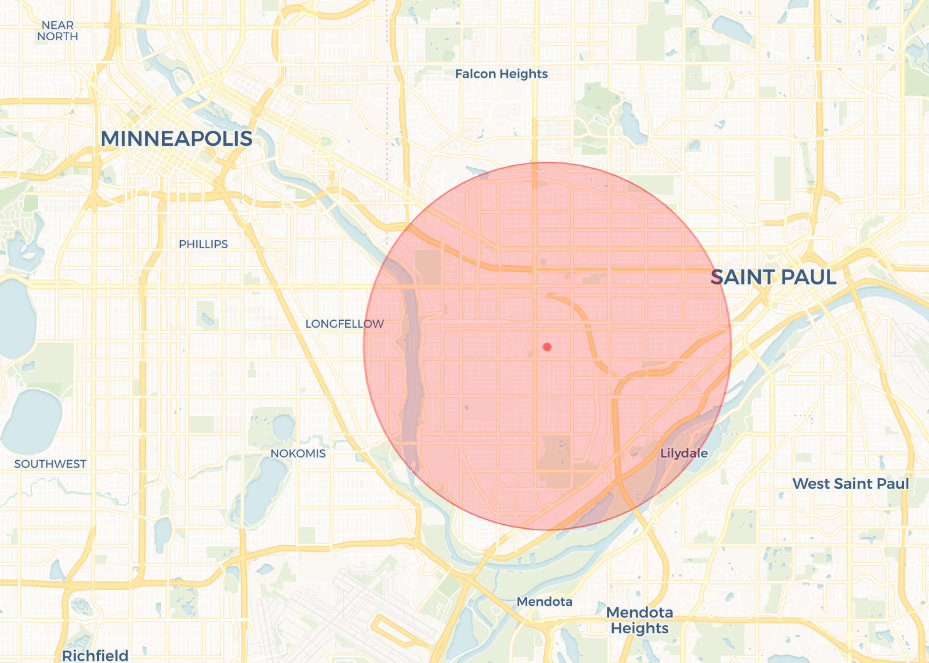
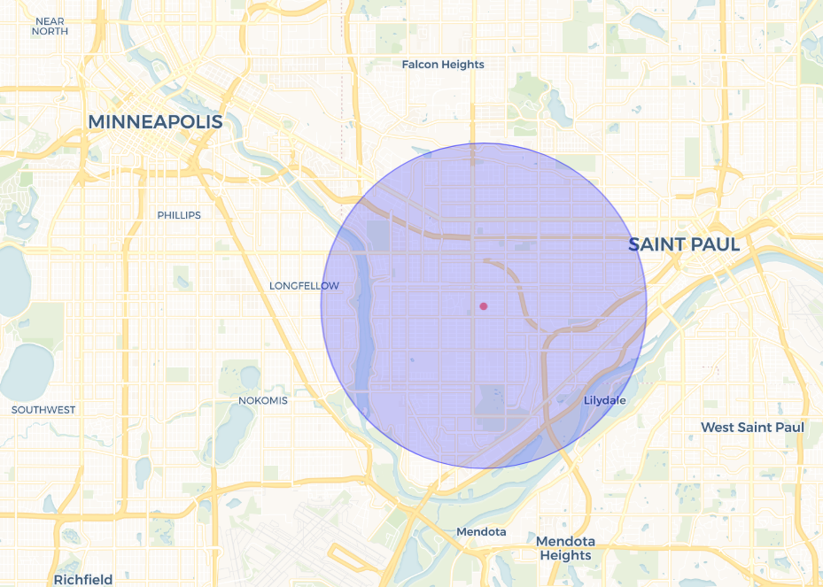

Detecting Clusters in Space-Time with multinomss
Overview
This post summarizes the capstone (plan B) project I completed as student in the Division of Biostatistics at the University of Minnesota School of Public Health.
Spatial and space-time scan statistics are commonly used in epidemiology, veterinary population medicine, and other disciplines that rely on geospatial data to determine whether point processes are random or if clustering of points can be detected. To this end, I developed an R package, multinomss, that implements the multinomial space-time scan statistic and produces easy-to-read results and interactive visualizations. The Raptor Center (TRC) at the University of Minnesota College of Veterinary Medicine conducts research to identify emerging and persistent environmental issues related to raptor health. I will demonstrate the application of multinomss using TRC data and show equivalency to the results obtained via SaTScan, a popular stand-alone software that unfortunately is not open-source. Statistical and computational limitations of the multinomial space-time scan statistic will also be discussed.
Introduction to the Scan Statistic
Broadly, scan statistics comprise a group of methods used to determine whether or not a point process is random. If a point process is not random, this means there is some kind of clustering of the data. Various flavors of scan statistics have been developed to accommodate different distributional assumptions made about the underlying data generating process. This post (and my project) focus on the multinomial scan statistic.
Scan statistics are applicable to one, two, and three dimensional spaces:
- One-dimensional: points on a line
- Two-dimensional: points on a plane
- Three-dimensional: points on a plane changing over time
For the two- and three-dimensional cases, these points can be organized into regions of space and/or time called “scanning windows” (fig. 1). These scanning windows are then varied in size and/or height to capture different sets of points for which the scan statistic is calculated.
Figure 1: Example of Scanning Windows
Multinomial Scan Statistic
Scan statistics have been applied to Poisson, Bernoulli, exponential, Gaussian/Normal, ordinal, and multinomial data. The simplest case is the Bernoulli scan statistic, which is used when observations belong to one of two categories (often cases vs. controls). The multinomial scan statistic is an extension of this, where observations belong to one of >2 categories (e.g. different types of cancer in a study area).
The multinomial scan statistic, as detailed by is simply an extension of the likelihood ratio test statistic. Suppose we are interested in identifying potential clustering of observations within a study area and each observation can belong to one of \(K\) different groups. The number of observations in the study area belonging to group \(k\) is defined as \(C_k\), where the total number of observations in the study area is \(\sum_{k}{C_k} = C\). Within a given scanning window \(Z\), the number of observations belonging to group \(k\) is \(C_k(Z)\). It follows that the total number of observations within scanning window \(Z\) is \(\sum_k{C_k(Z)} = C(Z)\). Under the null hypothesis of the likelihood ratio test, the probability of an observation being in group \(k\) inside scanning window \(Z\) (\(p_k\)) is equal to the probability of an observation belonging to group \(k\) outside of scanning window \(Z\) (\(q_k\)) for all \(K\) groups: \[H_0: p_1 = q_1, \dots , p_K = q_K. \] The alternative hypothesis is that for at least one of the \(K\) groups, this equality does not hold. The maximum likelihood estimators of \(p_k\) and \(q_k\) are simply the proportion of observations in scanning window \(Z\) that belong to group \(k\) and the proportion of observations not in scanning window \(Z\) that belong to group \(k\), respectively: \[\hat{p}_k = \frac{C_k(Z)}{C(Z)} \ \text{and} \ \hat{q}_k = \frac{C_k - C_k(Z)}{C - C(Z)}.\]
The likelihood ratio test statistic for scanning window \(Z\) can then be computed to have the form
\[ \begin{equation} \log \lambda_{Z} = \sum_{k} \left\{ C_k(Z) \log\left( \frac{C_k(Z)}{C(Z)} \right) + (C_k - C_k(Z)) log\left( \frac{C_k - C_k(Z)}{C - C(Z)} \right) \right\} - \sum_{k} C_k log \left( \frac{C_k}{C} \right) \tag{1} \end{equation} \] the form shown in Equation (1) The scanning window with the largest test statistic \(\log \lambda_{Z}\) is the most likely cluster.
Review of Existing Software
SaTScan is a stand-alone software that was developed by Martin Kulldorff in 1997. This program implements many flavors of the scan statistic, is feature-rich and has been highly optimized over time. However, it is NOT open source. There are some existing R packages that have been developed as an open-source alternative to SaTScan, namely:
smerc(spatial data only)
SpatialEpi(spatial data only)
Scanstatistics(Bernoulli and Poisson data only)
For this project, I developed an open source R package that
Introduction to multinomss
The multinomss package includes functions that allow users to detect spatiotemporal clusters in multinomial data using the retrospective space-time scan statistic. Like the other R packages discussed above, this package integrates code via to allay the computational burden inherent to scan statistics. The package also includes functions to produce interactive visualizations of clusters using the leaflet package. Source code for the multinomss package is available on GitHub and can be installed in R using the devtools package:
devtools::install_github("Dillonicus/multinomss")The analysis pipeline in multinomss consists of three primary steps: (1) identify cylindrical space-time windows through which to scan; (2) determine the most likely cluster; and (3) conduct Monte Carlo simulation for calculation of p-values (fig. 2). These steps can be carried out using the core functions of multinomss.
Figure 2: Analysis pipeline in multinoms
Case Study
The Raptor Center (TRC) at the University of Minnesota College of Veterinary Medicine was established in 1974 as a medical clinic, educational center, and veterinary training facility. In addition to treating around 1,000 sick and injured birds of prey annually, TRC conducts research to identify emerging and persistent environmental issues related to raptor health. Since 1990, TRC has maintained an electronic medical database on rehabilitated animals. These data, along with data from partnering organizations such as the Wildlife Rehabilitation Center of Minnesota (WRC), are invaluable to our understanding of drivers of health in wildlife populations.
Data
The data used in this case study come from a subset of 5,876 raptors that were admitted to TRC between January 2013 and September 2018. Upon admission to TRC, each bird is assigned a unique identification number and the species and admission date are recorded. Some birds also have information about the location from which they were recovered. As this is a space-time analysis, only birds with an associated recovery location are considered in this case study. The final analysis set is comprised of n = 3,810 raptors admitted to TRC between October 2014 and September 2018 for which the recovery location is available. Few isolated observations are located outside of the Upper Midwest (fig. 3). There is no indication that the locations associated with these observations are erroneous. Due to the sparsity of these observations, they are unlikely to be captured in any significant clusters. Inclusion of these points in the analysis will slightly inflate the value of the likelihood ratio statistic under the null hypothesis, but not to an extent that will alter the final results.
Figure 3: Map of data used in analysis
